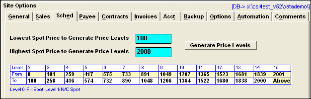
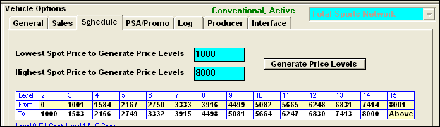
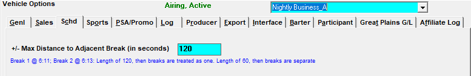

Schedule Options
The Schedule tab allows the scheduler to use the spot rate when scheduling to determine if an existing spot should be preempted for another scheduled spot.
On version 7.1 and above, an additional option labeled “First in, stays in when scheduling orders (suppress pre-empting)” is available. This setting is unchecked by default, and when not checked, there is no change to how scheduling orders works. When checked on, when scheduling an order using the Schedule screen (accessible from the Orders screen and from the Traffic Alerts screen), spots that have already been booked in avails for the selected vehicle will not be moved. The newly scheduled spots will be added if possible, but only when the spots can be added without moving the previously booked spots. This feature makes it so that spot moves that have already been done in a vehicle and week will not be lost as a result of scheduling a new or revised contract. This feature only applies to scheduling orders using the Schedule screen. The special actions available on the Spots screen, like the “Schd (Schedule)” button and the Pre-empt and Re-Schedule actions disregard the “First in, stays in” rule.
Spot Preemption by Rate
Spot Preemption by Rate allows you to command the scheduler to use the spot rate when scheduling to determine if an existing spot should be preempted for another scheduled spot.
There is a ‘Rate Table’ that you use to define the lowest and highest spot rate that you sell for your database or vehicle. The Rate Table is in the Site Option, Schedule tab for a ‘global’ way to apply Preemption by Rate. The Rate Table is also in the Vehicle Options to allow you to enter Preemption Rates for specific vehicles.
The Rate Table will create a rate priority between 2 and 14 for each spot. Scheduling will use this priority in addition to the rank that was assigned to the spot to determine what spots are pre-emptible. When there are two spots of equal rank, the rate priority is used and the spot with the higher rate priority will be scheduled.
There are pre-assigned rate priorities for some of the spots.
- Fill spots are 0 (the lowest)
- No Charge Spots from orders have a rate priority of 1.
- Any spots that have a rate higher than the rates in the Rate Table, will be given a rate priority 15.
The Preemption by Rate is used for
- New contract scheduling
- Altered contract scheduling
- The Schedule Button in the Spot Screen
- Unschedule/Reschedule (Rectify) for contracts in the Spot Screen
- When Moving spots on the Spot Screen
How to turn on Rate Preemption
If this feature was not on at the time your system was installed you can use the following procedure to turn on Preemption by Rate. This procedure may take some time to run. It’s a good practice to enter your Rate Table with the best representation of the spot rates you sell, if you need to redefine the Rate Table, you will need to rerun the SSF Fix Utility.
One advantage of using the Site Option in place of the Vehicle Options to define the Rate Table is if your vehicle spot prices are generally the same, it is faster to enter the rates in Site Option instead of in every vehicle. You can always enter the spot range for the few vehicles that have a different range.
To set the Price level:
- Print the Average Rate report for the current quarter. Analyze the report to determine your lowest and highest spot rates that are currently sold.
- Decide if you are going to set the Preemption Rate for the Site and/or the Vehicle. Go to the Site or Vehicle screen to enter the rates.
- Enter the lowest and highest spot price that you want to be in your Rate Table. Select Generate Price Levels.

The Rate Table will be defined for rate priority levels 2-14. If you want to change the “TO’ rate, increase or decrease it you can edit it at this time.
Once you have defined the Site Options and/or Vehicle Schedule Option you need to ‘set’ the priority on all the existing scheduled spots. This is done by running the SSF Check in Fix mode.

The SSF Fix will take some time as every spot for the vehicles that you have selected must be altered and get its new ‘Rate Priority’. It is recommended that while the SSF Fix is running, no one can be doing anything with Spots on the Traffic & Accounting system (Order scheduling, spot moves, copy assignment, log generation, spot exports, etc.). Here are the steps to take to execute the SSF Fix to begin using this feature on your database:
- Backup the Database
- Select Accessories, Utilities, SSF Check
- Choose the Fix option.
- Enter the Monday of the current month, leave the end date blank
- Define the Post Log option to be Outside
- Select ALL or the specific vehicles you have defined Spot Preemption Rates for.
- Select Fix.
Ghost Avail Conflict Check
For airing vehicles on version 7.1 and above, it is possible to set the amount of seconds to use when testing for ghost spots/avail conflicts by entering a value in seconds in the "+/- Max distance to adjacent break (in seconds)" field on the Schedule tab. (Note: this option only appears for airing vehicles.)

For example, if there's a break at 6:11a and 6:13a on an airing vehicle, if the "+/- Max distance" value is set to 120, then the breaks will be marked with cyan/ghost avails/spots (assuming the "ignore selling to airing conflict" checkbox is not checked on in Site Options) because the 6:13 break is within 120 seconds of the 6:11 break. On the other hand, if the value was set to 60 (or left blank, which is treated as 60 seconds), then there would be no conflict indicated, because the breaks are greater than 60 seconds apart from each other.